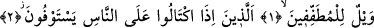
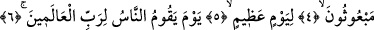

HİLEKÂRLARA
YAZIKLAR OLSUN!
Bismillâhirrahmânirrahîm
1. Eksik ölçüp tartanların vay hâline!
2. İnsanlardan alırken ölçüp tarttıklarında tam (alırlar).
3. Onlara vermek için ölçüp tarttıklarında ise noksan yapan hilekârlara yazıklar
olsun!
4. Onlar düşünmezler mi ki (hesap vermek için) diriltilecekler.
5. Büyük bir günde
6. Öyle bir gün ki, insanlar o günde âlemlerin Rabbinin huzurunda divan
duracaklardır.
“Eksik ölçüp tartanların vay hâline!” Âyette “vay hâline!” şeklinde tercüme
ettiğimiz “veyl” kelimesi şerrin ve kötülüğün şiddeti, helâk, elem verici azap anlamına
gelir. Dolayısıyla burada; “şiddetli şer veya helâk ya da elem verici azap, eksik ölçüp
tartanların başına olsun” denmektedir.
İbn Keysan’ın ifâdesine göre “veyl”, belâya uğramış her sıkıntılı kimse için
kullanılır. Arapçada “veylun leke” dendiğinde hitap edilen kişiye; “sen başına belâ ve
musîbet gelmesine müstahak oldun” denmiş olur.
Âyette geçen “veyl” kelimesi -nekre yâni elif lam takısız olmakla birlikte-
mübtedâdır. Çünkü -Mürselat sûresinde de açıklandığı üzere- bu kelime duâ veya
bedduâ makamında gelmiştir.
“Mutaffifin” ölçüp tartarken insanların haklarını tam olarak vermeyen, eksilten kişiler
demektir. Çünkü bu kelimenin kökü olan “tatfif” ölçek ve terazide eksiltme ve müşteriye
hakkını tam ve mükemmel bir biçimde vermeyerek hıyanet etme anlamına gelir. Aslında
bu kök, “değersiz şey” anlamına gelen “tafif” kelimesinden türemektedir. Ölçekten ve
teraziden eksiltilen kısım müşteriye hissettirilmeden gizlice aşırıldığı için çok az
değersiz bir şeydir. Ayrıca bu ölçeği tutan ve bu teraziyi kullanan kimsenin
değersizliğini gösterir. Zaten ölçek ve teraziden çok şey çalınamaz, çünkü bu hemen